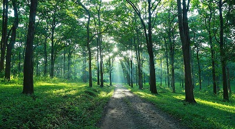
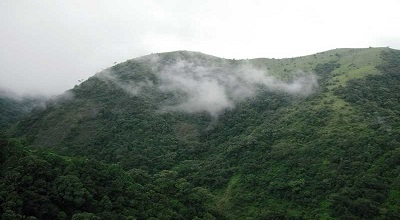

Parambikulam Tiger Reserve
Parambikulam Tiger Reserve and Wildlife Sanctuary, located in the Palakkad district of Kerala, is best known for its constant efforts to preserve the dwindling tiger population. Surrounding hills and river along with flora and fauna make it the perfect place for a trek and safari.
The Parambikulam Tiger Reserve is the most protected ecological terrain of the Western Ghats. Endowed with peninsular vegetation and wildlife, this destination has minimum human interference. Some of the most prized animals found here include lion-tailed macaques, Bengal tigers, Indian leopards, wild boars, sloths, king cobra, Travancore kukri snake, and the Western Ghats flying lizard among others. Flora includes teak, sandalwood, neem and rosewood trees. This sanctuary is also home to four different indigenous tribes- Kadar, Malasar, Muduvar and Mala Malasar.

The Silent Valley National Park
The Silent Valley National Park, with its lush green forests and beautiful views of the rich flora and fauna, is a popular destination for nature as well as wildlife lovers all across the globe. Spread across an area of 89 square kilometres, the Silent Valley National Park is located in the Kundali Hills of the Western Ghats in Kerala in southern India. With its long, detailed history and the unique status of a rainforest, this national park is indeed a sight to visit. The well-planned Safari and the beautiful stop-overs around the park only make a trip to this part of Kerala more worthwhile.
A visit to this national park holds prominent significance for traveller and nature enthusiasts as this site is the last representative virgin tract of tropical evergreen forests in India. Though smaller in size when compared to the other national parks in India, what set the Silent Valley National Park apart from all other similar sites is the Sylvan environment that the region boasts of, along with its lofty and majestic peaks and the several rivers that run through its length.
The numerous plant and animal species that can be found here are indeed worth mentioning. The park has a strong faunal and floral population, with many of the endangered species residing here blissfully, unharmed by the outer environment. The ones who are most commonly seen here are the elephant, tiger, lion-tailed macaque, gaur, wild pig, panther and sambar. The vegetation of this park is the tropical, moist evergreen kind. It is also almost next to possible to ignore the presence of the River Kunthi, which descends from the Nilgiri Hills and then passes through this region, enchanting visitors with its crystal clear water, devoid of any impurities.